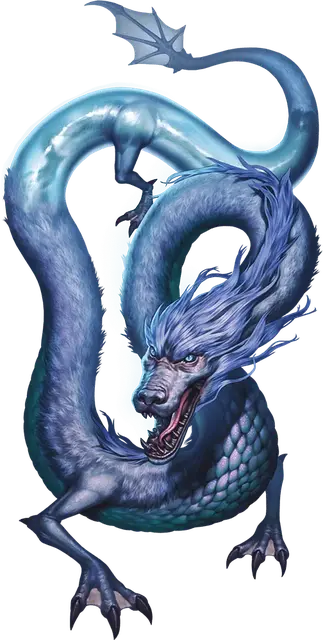

Сет — дракон-перевертыш
Seth the Shapeshifting Dragon
Средний Дракон, нейтральный, именной НИП

Класс Доспеха 17
Хиты 153 (18к8 + 72)
Скорость 50 футов, плавая 50 футов
| мод | спас | ||
|---|---|---|---|
| СИЛ | 16 | +3 | +7 |
| ЛОВ | 25 | +7 | +11 |
| ТЕЛ | 19 | +4 | +8 |
| мод | спас | ||
|---|---|---|---|
| ИНТ | 13 | +1 | +1 |
| МДР | 15 | +2 | +2 |
| ХАР | 14 | +2 | +2 |
Навыки Восприятие +6, Скрытность +11
Сопротивление урону огонь, холод
Иммунитет к урону яд
Иммунитет к состояниям захват, опутанность, отравление
Чувства слепое зрение 30 футов, тёмное зрение 120 футов, пассивное Восприятие 16
Языки Общий, Акван, Драконий
Опасность 10 (5900 опыта)
Бонус мастерства +4
Особенности
Амфибия. Сет может дышать и воздухом и под водой.
Невидимость в воде. Сет невидим когда полностью погружен в воду.
Действия
Мультиатака. Сет совершает одну атаку Укусом и две атаки Когтем.
Укус. Рукопашная атака оружием: +11 к попаданию, досягаемость 10 футов, одна цель. Попадание: 10 (1к6+7) колющего урона плюс 9 (2к8) урона холодом.
Коготь. Рукопашная атака оружием: +11 к попаданию, досягаемость 5 футов, одна цель. Попадание: 14 (2к6+7) рубящего урона.
Дыхание прилива (перезарядка 5-6). Сет выдыхает поток ледяной воды в 30 футовом конусе. Каждое существо в области должно совершить спасбросок Телосложения Сл 16. При провале, существо получает 36 (8к8) урона холодом и становится недееспособным до конца его следующего хода. При успехе, существо получает только половину этого урона.
Бонусные действия
Смена формы. Сет магическим образом превращается в Гуманоида Маленького размера или Зверя Крошечного или Маленького размера, при этом сохраняет все игровые параметры (кроме размера). Превращение оканчивается когда хиты Сета опустились до 0, или когда он окончит его бонусным действием.
Супер скорость (2/день). Скорость Сета удваивается до тех пор, пока он сохраняет концентрацию (как если бы он концентрировался на заклинании). Пока его скорость увеличена таким образом, все броски атаки совершаются по нему с помехой, и он становится частично бестелесным, позволяя ему передвигаться сквозь существ и предметы, как если бы они были труднопроходимой местностью. Сет получает 5 (1к10) урона силовым полем, если оканчивает ход внутри предмета.